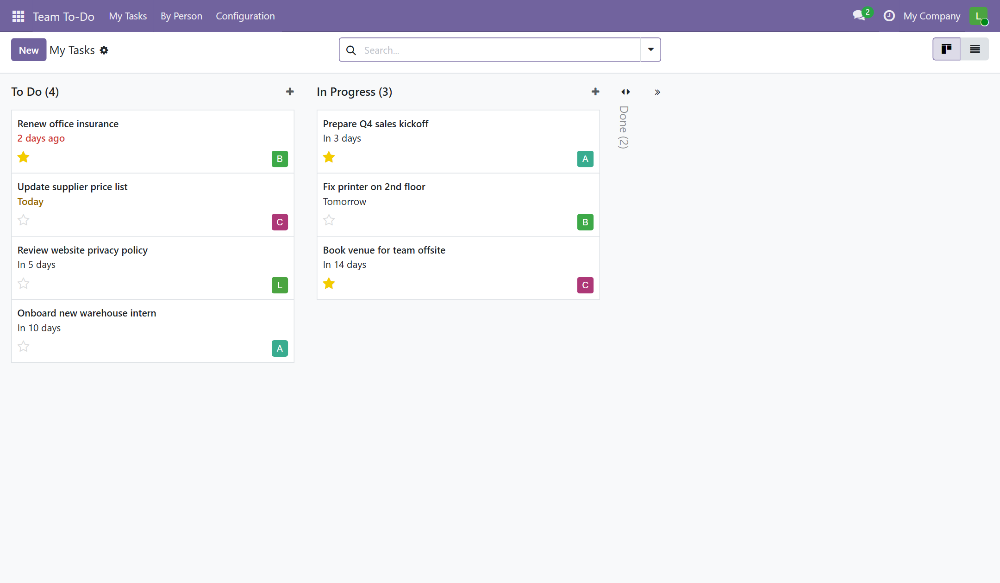
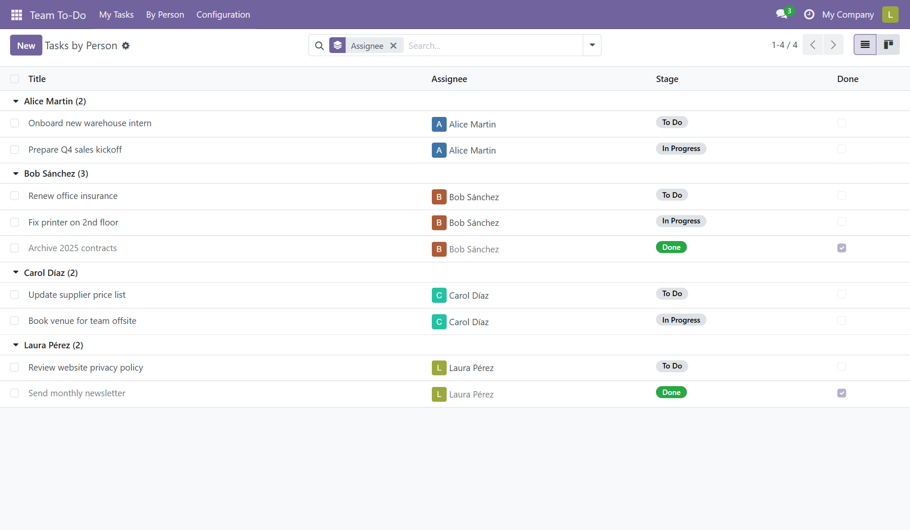
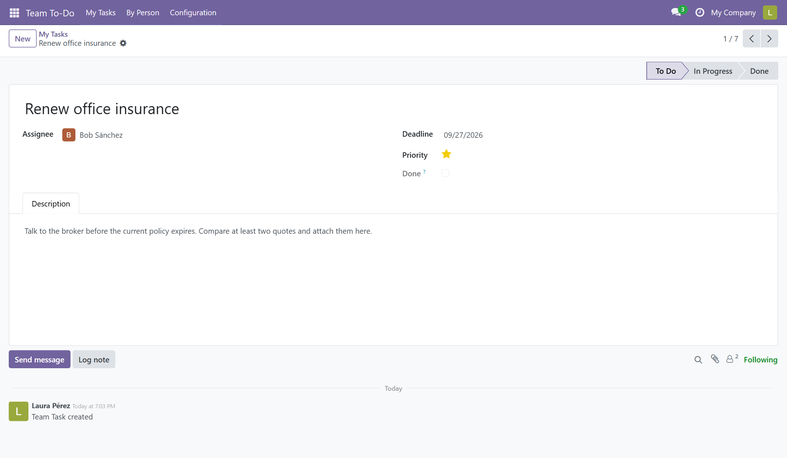
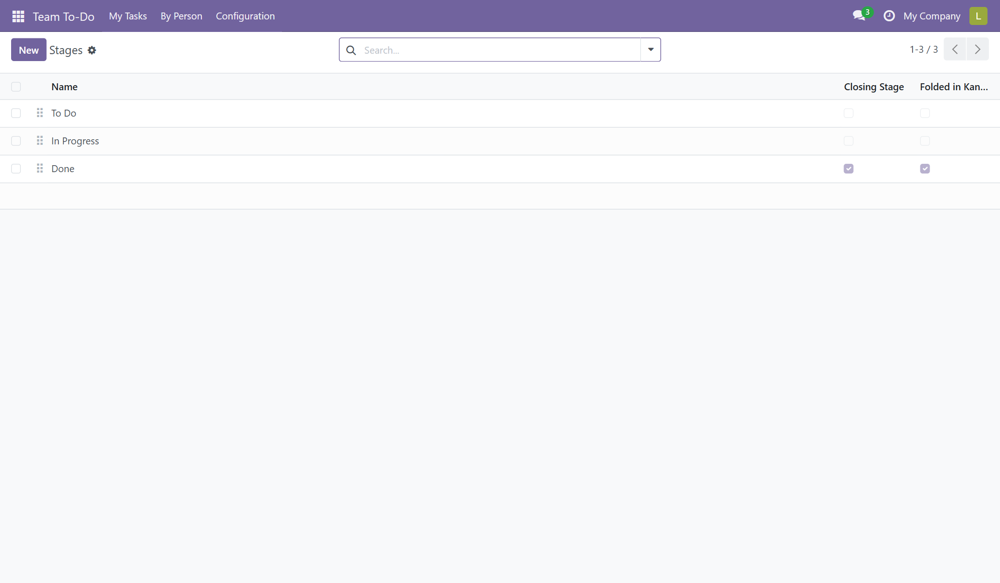

Odoo's To-Do app is personal: your list, your stages, your board. Team To-Do is for the team. One board, shared stages, exactly one owner per task, and an administrator who sees everything. Lighter than the Project app, and it does not need it.

A stage belongs to the task, not to the person looking at it. When a task moves to In Progress, it is in progress for everybody. No more "it's done on my board".
Every task has exactly one assignee, and it is required. Handing a task over takes it away from you. It is always clear who has to move it next.
Users see their own tasks. Administrators see every task, grouped by person. Two roles, set on each user like any other Odoo access right.
The By Person menu lists every open task grouped by assignee. Reassign with a drag, spot who is overloaded, and see what is overdue. Administrators are the only ones who can delete tasks and configure stages.


Three stages come out of the box: To Do, In Progress, Done. Rename them, add your own, reorder them, fold the finished ones. Mark any stage as a closing stage and its tasks count as done everywhere.

Install Team To-Do: Project link. It adds an optional link from each task to a real project, and it installs itself when both apps are present. Team To-Do keeps working without it.
Questions and bug reports: support@cimalor.com. We aim to reply within 48 to 72 business hours. You can also open an issue at github.com/cimalor-apps/addons, but the reply time above applies to email only.
Team To-Do is free software under the LGPL-3 license. Made by Cimalor.